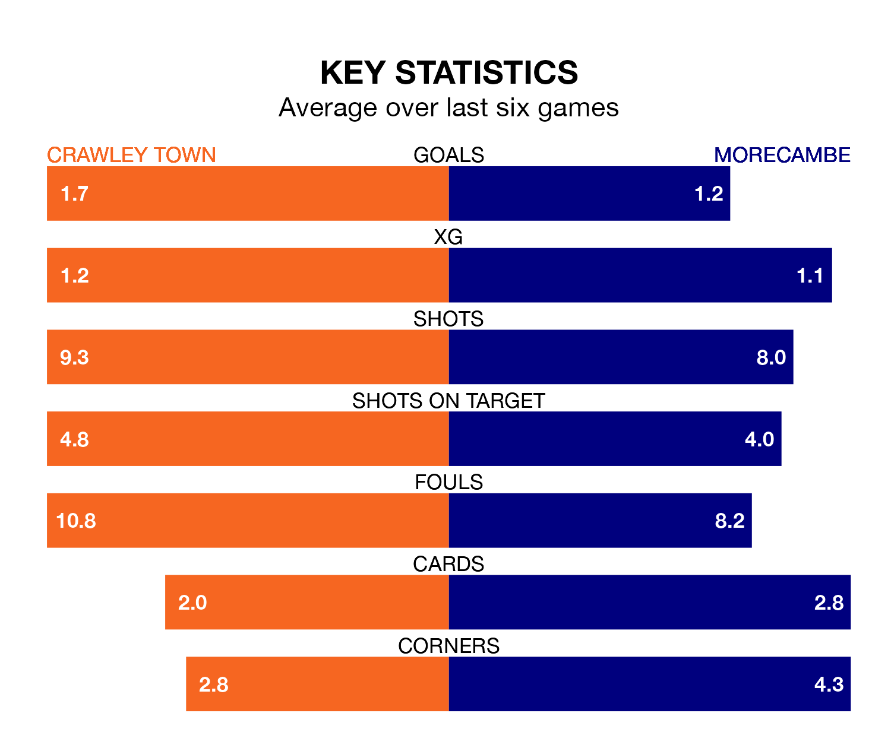

Crawley Town host Morecambe on Saturday at the Broadfield Stadium in EFL League Two.
In their last league match, on January 13, Crawley lost to Salford City 1-0 at home.
Morecambe also lost, 1-0 at home against Colchester United on January 27.
In the last 10 years, Crawley and Morecambe have played each other on 11 occasions. They won four each, and they drew three times.
On average, the Red Devils scored 1.5 goals and the Shrimps 1.4 in those matches.
Their last meeting was on March 2 2021, when Morecambe won 3-1 at home.
With 43 goals in 27 games so far this season, Crawley are scoring more than average in the league with 1.6 goals per game. But they are conceding more than average too, letting in 45 goals at a rate of 1.7 per game.
Morecambe, meanwhile, are average scorers, with 1.5 goals per game. They have conceded 1.6 goals per game.
Town are in mixed form in EFL League Two, with three wins and three losses from their last six games.
With a win and three draws over that period, the Shrimps's form is worse – they have taken six points from 18, compared to the Red Devils' nine.
The home team's Liam Kelly is among the league's most creative players, racking up seven assists in 23 appearances so far this season, and holding third spot in EFL League Two's assist charts.
For the visitors, Adam Major has set up the most goals, having laid on five assists in 23 games.
Morecambe are 15th in the table after 27 games, of which they have won 10 and drawn seven, earning 37 points.
Crawley are three places ahead of Morecambe in 12th, with 12 wins and three draws putting them on 39 points.
Updated: 10:03 (UTC), 30/01/24